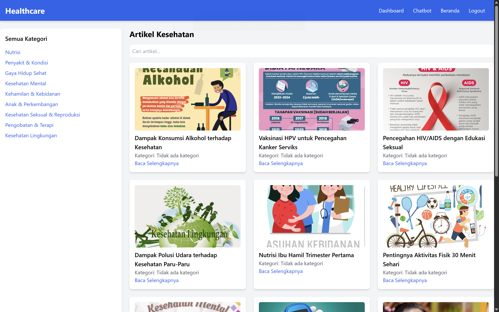
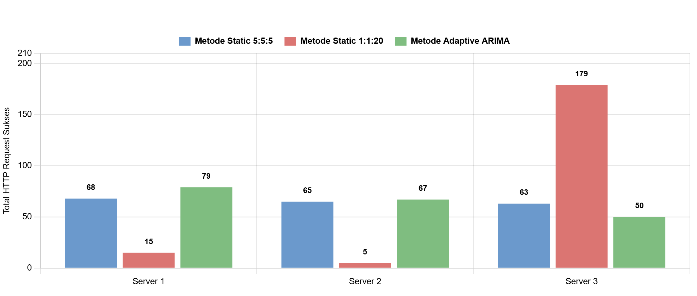
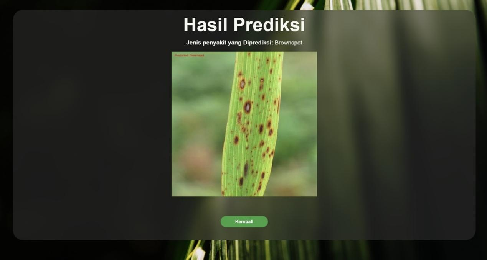
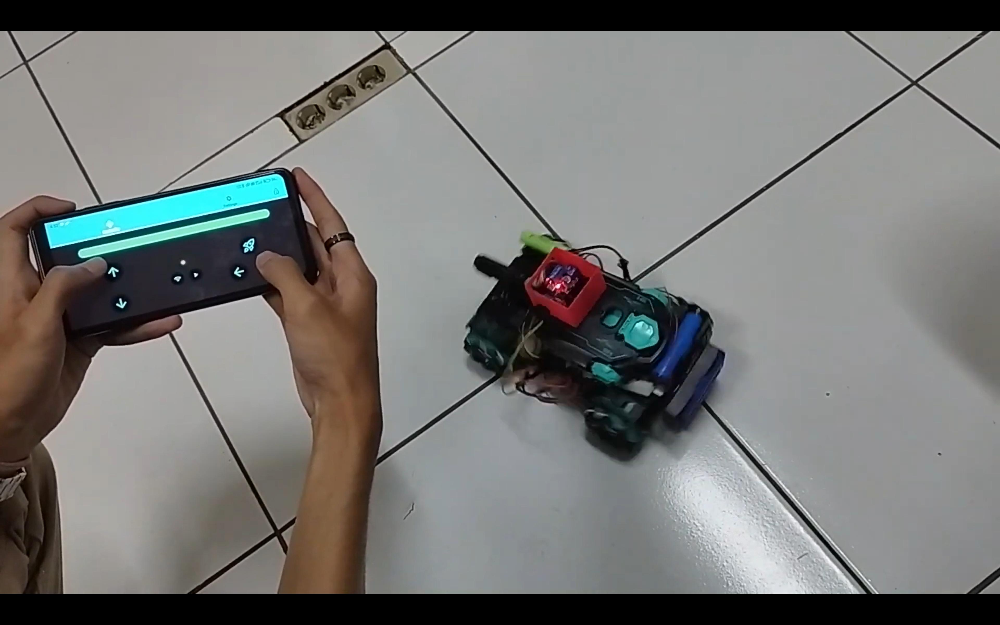

Selected web work
Web applications
A closer look at a game storefront and a student organization platform.
.png)
.png)
.png)
.png)
.png)
.png)
.png)
.png)
.png)
.png)

Image 1 of 11
The short version
Software developer from Bandung with a foundation in web engineering, cloud infrastructure, machine learning, and connected systems. My work sits at the intersection of product engineering and applied intelligence.
From Laravel and Spring Boot to Go services and AWS architecture, I enjoy making the invisible structure behind a product feel clear, resilient, and ready to grow.
Start a conversation ↗Selected work
Selected web work
A closer look at a game storefront and a student organization platform.
Image 1 of 11

AWS / GO / MYSQLCloud application · 2025
End-to-end healthcare commerce system with product storage, transactions, JWT auth, and a deployment-ready AWS architecture.

THESIS / ARIMASystems research · 2026
Dynamic traffic distribution using actual and predicted CPU utilization with ARIMA forecasting.

PYTHON / CVMachine learning · 2024—25
Flood prediction, rice leaf disease classification, and vehicle speed detection experiments.

IOT / EMBEDDEDConnected devices · 2023—25
Smart door locks, flood detection, automatic fans, and an MQTT-controlled RC tank system.
The path so far
Laboratory of Informatics · Institut Teknologi Nasional
Campus organization · Bandung
INKU · Institut Teknologi Nasional
The toolkit
Comfortable moving from a system diagram to the code, infrastructure, and documentation that make it real.